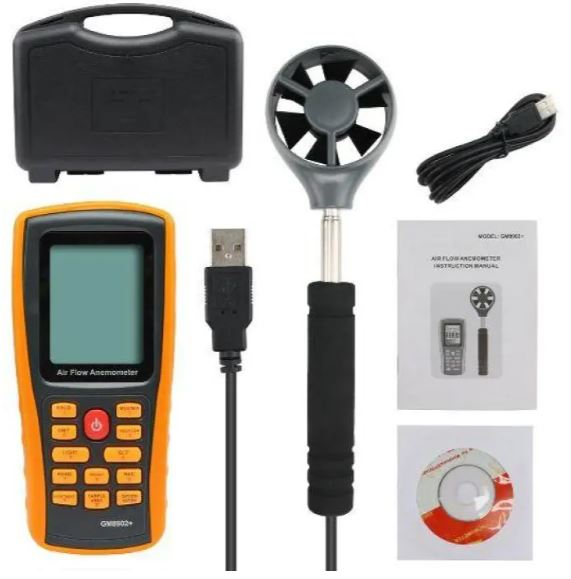
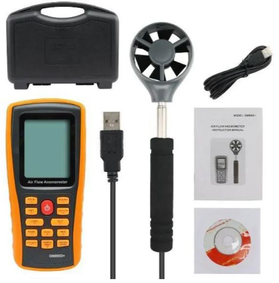
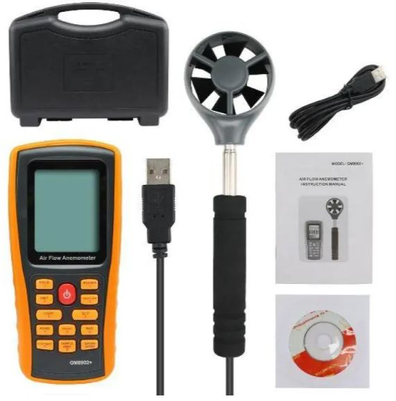
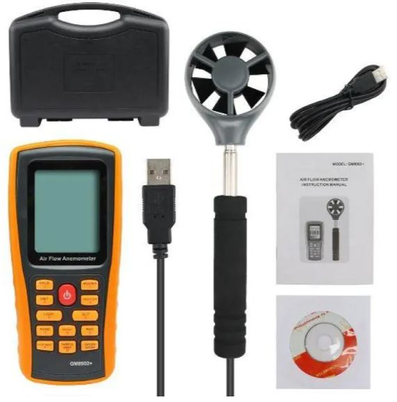

| Вид | Анемометр |
| Тип | Обертальний |
| Бренд | BENETECH |
| Країна-виробник | Китай |
| Джерело живлення | AАА |
| Напруга | 1,5 В |
| Комплектація | Анемометр, протокол калібрування європейського зразка, сертифікат CE, сертифікат RoSH, диск із ПЗ, елемент живлення AAA 1,5V 4 шт., гарантійний талон, інструкція, USB-кабель, технічний паспорт, пластиковий кейс |
| Додаткові характеристики | Пило- і вологозахищений корпус в гумовому чохлі для захисту від ударів, наявність на прилад протоколу калібрування європейського зразка, сертифікатів RoSH і CE, автоматичне вимкнення, відображення максимального, мінімального, середнього і поточного значення швидкості, пам'ять на 50 вимірювань, індикація низького заряду батареї, підключення до комп'ютера (ПО йде в комплекті), побудова звітів і графіків в реальному часі, підсвічування дисплея, вимірювання температури повітряного потоку, великий діапазон вимірювання швидкості повітряного потоку: 0-45 m / s |
| Габарити пакування (ВхШхГ) | 64x265x201 мм |
| Вага упаковки | 1055 г |
Анемометр Benetech GM8902X — це професійний вимірювальний прилад, обладнаний чутливою виносною телескопічною крильчаткою для проведення вимірювань у важкодоступних місцях.
У реальному часі може заміряти швидкість, об'єм і температуру повітряного потоку. Анемометр GM8902X дуже простий в експлуатації та надійний. Обладнаний пам'яттю на 500 точок і можливістю під'єднання до ПК.